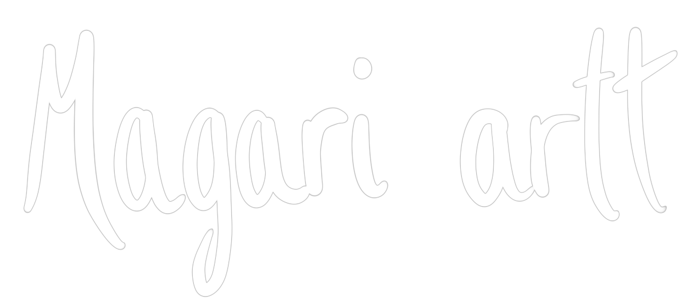
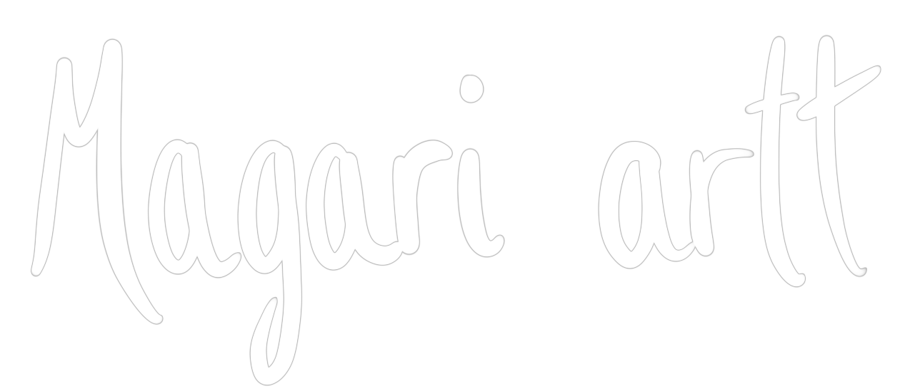
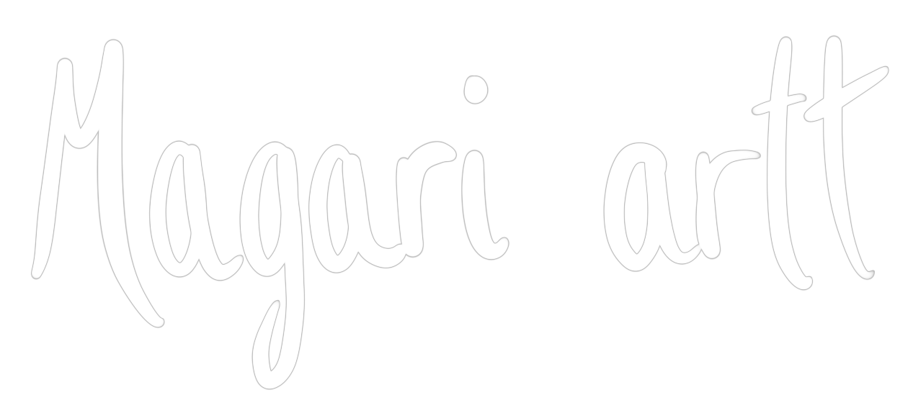
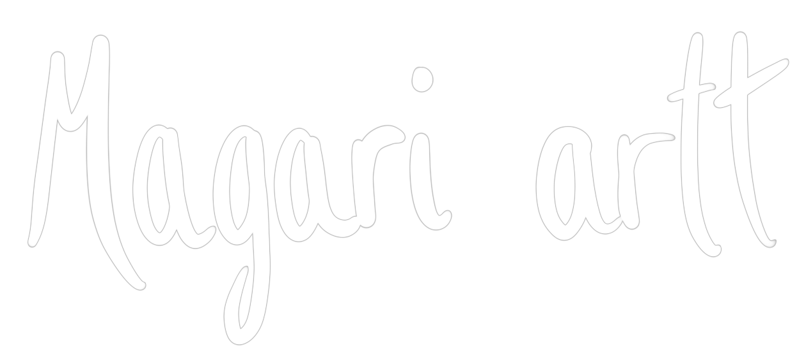
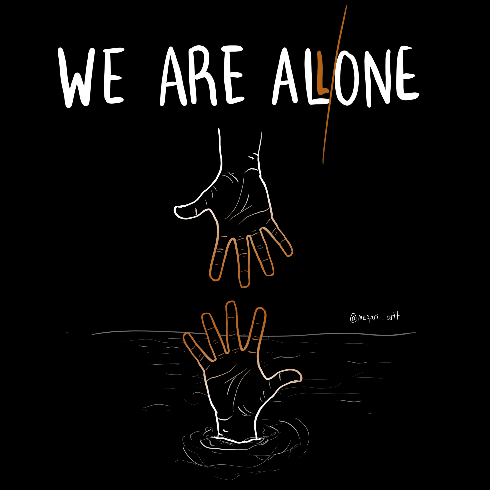
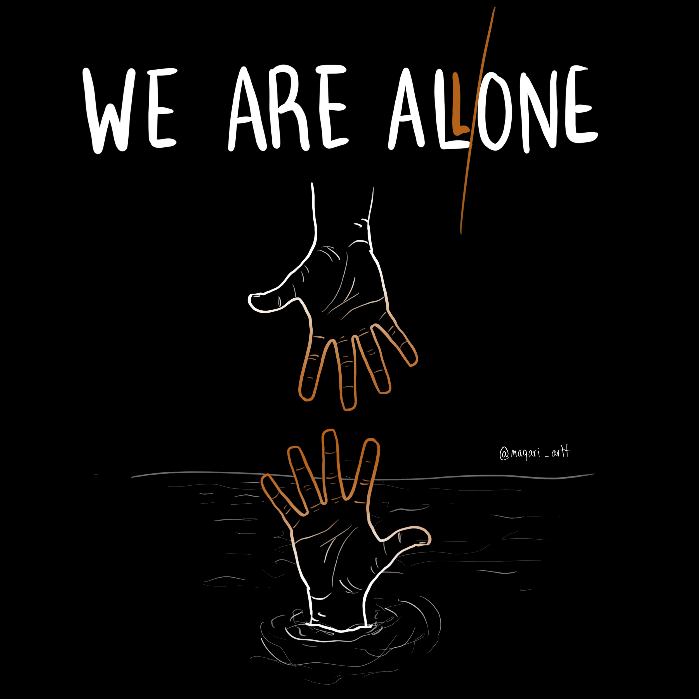
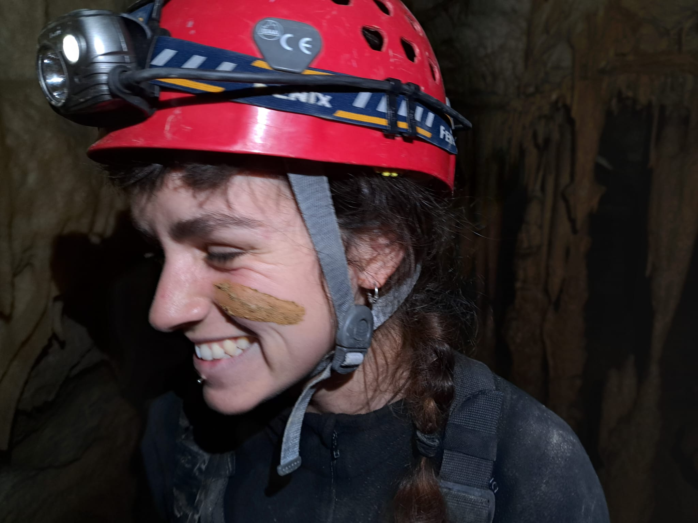

 



¿Cómo es el proceso desde una idea al final?
Cada ilustracion conlleva un estudio exaustivo previo, a fin de comprender su naturaleza al máximo. Esto hace que el trabajo final sea muy próximo a la realidad, mostrando la verdad sobre lo representado, y dejando de lado la subjetividad.
Acabado este primer paso, comienzo a realizar bocetos, escojo la técnica más adecuada y, ¡a por el final!
¿Qué diferencia a una ilustración científica de una que no lo es?
Esa búsqueda de la objetividad, el intento de mostrar la realidad lo más fielmente posible.
 Me llamo Laura y soy estudiante de Ilustración Científica, además de oceanógrafa e instructora de buceo. Mi trabajo consiste en estudiar ese gran desconocido que es el mar, y acercarlo a la gente a través del dibujo. Vivimos una realidad en la que es necesario actuar ya para recuperar y mantener nuestros océanos sanos y, como dice la frase anterior, es necesario que conozcamos y seamos conscientes de qué es eso que debemos cuidar. La oceanografía, junto con haber pasado tantas horas sumergida, me han dado un entendimiento profundo del funcionamiento del medio marino, lo que, sumado a mi pasión por el dibujo, me permite crear ilustraciones detalladas y precisas.Así que, si quieres ayudarme a dar a conocer mi medio, tienes un proyecto propio o, simplemente te fascinan las criaturas marinas como a mi, ¡no dudes en ponerte en contacto!